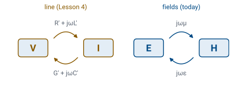

L35 - Maxwell’s Equations in a Lossless, Source-Free Region I#
Maxwell's Equations in a Lossless, Source-Free Region I
Today we write Maxwell’s equations with phasors and turn them into one wave equation for each field.
Lesson 35 · Module 4: Dynamic Fields · Maj Ellis · Dr. Neil Rogers
Learning Objectives
- I understand the process of decoupling and finding solutions for Maxwell's equations for dynamic fields.
Lesson 34 collected Maxwell’s equations for fields that change in time. Two of them link the electric and magnetic fields to each other: a changing magnetic field produces an electric field, and a changing electric field produces a magnetic field. Today we follow the same path Lesson 4 took on the transmission line. We write the equations with phasors, which turns every time derivative into a factor of \(j\omega\), and then we decouple them into one equation for \(\widetilde{\mathbf{E}}\) alone and one for \(\widetilde{\mathbf{H}}\) alone. The result is the Helmholtz equation, the wave equation for fields. Lesson 36 solves it and adds loss.
Where We Were
Lesson 34: Maxwell’s equations in point form:
The two divergence equations are Gauss’s law from Lesson 21 and Gauss’s law for magnetism from Lesson 28. They hold unchanged when the fields vary in time. The two curl equations are where time enters. Faraday’s law, from Lesson 33, says that a changing magnetic flux density produces a circulating electric field. The Ampere–Maxwell law, Lesson 29’s Ampere’s law with Lesson 33’s displacement current \(\partial\mathbf{D}/\partial t\) added, says that a changing electric flux density produces a circulating magnetic field just as a current does. In a simple medium, \(\mathbf{D} = \epsilon\mathbf{E}\), \(\mathbf{B} = \mu\mathbf{H}\), and \(\mathbf{J} = \sigma\mathbf{E}\), with \(\epsilon\), \(\mu\), and \(\sigma\) constant, as in Lesson 2.
Fields That Vary Sinusoidally
\(\widetilde{\mathbf{E}}(\mathbf{r})\) has three complex components, one for each direction.
Each component carries its own amplitude and phase.
We now assume that every source in the problem varies sinusoidally at one angular frequency \(\omega\), as Lesson 2 assumed for voltages and currents. Every field then varies sinusoidally at the same frequency, so each component of \(\mathbf{E}\) is a cosine at \(\omega\) with an amplitude and phase that depend on position. Lesson 2 represented one such cosine by a single complex number, its phasor. A vector field needs three of them, one for each of its \(x\), \(y\), and \(z\) components, and we collect the three into the vector phasor \(\widetilde{\mathbf{E}}(\mathbf{r}) = \hat{\mathbf{x}}\ \widetilde{E}_x + \hat{\mathbf{y}}\ \widetilde{E}_y + \hat{\mathbf{z}}\ \widetilde{E}_z\). The real part of \(\widetilde{\mathbf{E}}\ e^{j\omega t}\) is the field at any instant. The other fields, \(\widetilde{\mathbf{H}}\), \(\widetilde{\mathbf{D}}\), \(\widetilde{\mathbf{B}}\), and \(\widetilde{\mathbf{J}}\), and the charge density \(\widetilde{\rho}_v\), follow the same definition.
Faraday’s Law in Phasor Form
We substitute the phasor form of each field into Faraday’s law. On the left, the curl takes derivatives with respect to position, and the real part and the factor \(e^{j\omega t}\) do not depend on position. The curl therefore passes through both and acts on \(\widetilde{\mathbf{E}}\) alone. On the right, the time derivative passes through the real part and acts on \(e^{j\omega t}\) alone, bringing down \(j\omega\), exactly as in Lesson 2. Both sides are now the real part of a complex vector times \(e^{j\omega t}\), and the equation must hold at every instant. Setting \(\omega t = 0\) matches the real parts of the two complex vectors, and setting \(\omega t = \pi/2\) matches their imaginary parts, so the complex vectors themselves are equal. Faraday’s law becomes an equation with no time in it.
All Four Equations in Phasor Form
The other three equations convert the same way. The divergence equations contain no time derivative, so each simply holds for the phasors. The Ampere–Maxwell law has the time derivative of \(\mathbf{D}\), which becomes \(j\omega\widetilde{\mathbf{D}}\). We then use the simple medium to write everything in terms of \(\widetilde{\mathbf{E}}\) and \(\widetilde{\mathbf{H}}\): \(\widetilde{\mathbf{D}} = \epsilon\widetilde{\mathbf{E}}\) and \(\widetilde{\mathbf{B}} = \mu\widetilde{\mathbf{H}}\). Because \(\epsilon\) and \(\mu\) are constant, they come outside the divergence, which is how \(\nabla\cdot\widetilde{\mathbf{D}} = \widetilde{\rho}_v\) becomes the first line and \(\nabla\cdot\widetilde{\mathbf{B}} = 0\) becomes the second. Each time derivative in Lesson 34’s equations is now a factor of \(j\omega\).
A Lossless, Source-Free Region
Set \(\widetilde{\rho}_v = 0\) and \(\sigma = 0\), so \(\widetilde{\mathbf{J}} = 0\):
A source-free region contains no charge and no impressed current. The sources that create the fields, such as the charges and currents on an antenna, are somewhere else, and we study the fields after they have left. A lossless region also has \(\sigma = 0\), so no conduction current \(\widetilde{\mathbf{J}} = \sigma\widetilde{\mathbf{E}}\) can flow in it. Free space and good insulators such as polyethylene are close to this ideal. With both sources removed, the divergence of each field is zero, and the two curl equations contain only \(\widetilde{\mathbf{E}}\) and \(\widetilde{\mathbf{H}}\). Lesson 36 puts \(\sigma\) back.
Two Coupled Equations

The two curl equations are coupled: the curl of \(\widetilde{\mathbf{E}}\) is set by \(\widetilde{\mathbf{H}}\), and the curl of \(\widetilde{\mathbf{H}}\) is set by \(\widetilde{\mathbf{E}}\). Neither field can be found from its own equation alone. Lesson 4 met the same situation on a transmission line, where the derivative of \(\widetilde{V}\) was set by \(\widetilde{I}\) and the derivative of \(\widetilde{I}\) by \(\widetilde{V}\). The figure draws both as a loop. On the line, the series impedance \(R' + j\omega L'\) and the shunt admittance \(G' + j\omega C'\) link \(\widetilde{V}\) and \(\widetilde{I}\); in the region, \(j\omega\mu\) and \(j\omega\epsilon\) link \(\widetilde{\mathbf{E}}\) and \(\widetilde{\mathbf{H}}\). Lesson 4 broke the loop by differentiating one equation and substituting the other, and we do the same with the curl.
The Curl of a Curl
\(\nabla^2\mathbf{F}\) is the Laplacian of each Cartesian component.
Lesson 29 used this identity to derive Ampere’s law, and it holds for any vector field. Writing out the \(x\) component of the left side,
We add and subtract \(\partial^2 F_x/\partial x^2\). The three terms with a derivative of \(F_x\) twice in the same variable, all with a minus sign, form \(-\nabla^2 F_x\). The three remaining terms are \(\partial^2 F_x/\partial x^2 + \partial^2 F_y/\partial x\partial y + \partial^2 F_z/\partial x\partial z\), which is \(\partial(\nabla\cdot\mathbf{F})/\partial x\). The \(y\) and \(z\) components follow the same pattern. The vector Laplacian \(\nabla^2\mathbf{F}\) is \(\hat{\mathbf{x}}\ \nabla^2 F_x + \hat{\mathbf{y}}\ \nabla^2 F_y + \hat{\mathbf{z}}\ \nabla^2 F_z\), each term the scalar Laplacian of Lesson 17.
Decoupling the Electric Field
We take the curl of both sides of Faraday’s law. On the right, \(j\omega\mu\) is a constant and comes outside the curl, which leaves the curl of \(\widetilde{\mathbf{H}}\). The Ampere–Maxwell law says exactly what that is, \(j\omega\epsilon\widetilde{\mathbf{E}}\), and substituting it removes \(\widetilde{\mathbf{H}}\) from the equation. On the left, we expand the curl of a curl with the identity. The region is source-free, so \(\nabla\cdot\widetilde{\mathbf{E}} = 0\) and the gradient term vanishes. On the right, \(-j\omega\mu \times j\omega\epsilon = -j^2\omega^2\mu\epsilon = \omega^2\mu\epsilon\). What remains contains \(\widetilde{\mathbf{E}}\) alone.
The Helmholtz Equation
Free space at 1 GHz: \(\beta = 20.96\) rad/m and \(\lambda = 2\pi/\beta = 0.300\) m.
Moving every term to one side gives the Helmholtz equation for the electric field. We name the constant \(\beta\), the phase constant, because Lesson 36 shows that it plays the same part it played on the line: it is the phase change per meter of the wave. Its units are rad/m, since \(\omega\sqrt{\mu\epsilon}\) has units of \((1/\text{s})\cdot(\text{s/m})\). In free space, \(\mu_0 = 4\pi\times10^{-7}\) H/m and \(\epsilon_0 = 8.854\times10^{-12}\) F/m, so at 1 GHz
The Helmholtz equation is three scalar equations, one for each Cartesian component, because the vector Laplacian acts on each component separately.
The Helmholtz Equation for H
The same steps, starting from the Ampere–Maxwell law, decouple the magnetic field. We take the curl of both sides, bring \(j\omega\epsilon\) outside, and substitute Faraday’s law for the curl of \(\widetilde{\mathbf{E}}\). Gauss’s law for magnetism gives \(\nabla\cdot\widetilde{\mathbf{H}} = 0\), which removes the gradient term, and \(j\omega\epsilon\times(-j\omega\mu) = \omega^2\mu\epsilon\) again. The magnetic field obeys exactly the same Helmholtz equation, with the same \(\beta\). The two fields are still linked: once we know \(\widetilde{\mathbf{E}}\), Faraday’s law gives \(\widetilde{\mathbf{H}}\), and Lesson 37 uses it to find the magnetic field of a plane wave.
The Speed of the Wave
The Helmholtz equation has a time-domain form. A factor of \(j\omega\) in phasor form is a time derivative, so \(-\omega^2 = (j\omega)^2\) is a second time derivative, and \(\nabla^2\widetilde{\mathbf{E}} + \omega^2\mu\epsilon\widetilde{\mathbf{E}} = 0\) is the phasor form of the vector wave equation above. An equation of this form describes a disturbance that travels at the speed \(1/\sqrt{\mu\epsilon}\), the phase velocity \(\omega/\beta\) that Lesson 5 found for the line. In free space that speed is \(2.998\times10^8\) m/s, the measured speed of light. Two constants measured with charges, currents, and magnets at rest predict how fast light travels, which is how Maxwell identified light as an electromagnetic wave.
Fields and Lines Side by Side
Line (Lesson 4) |
Fields (today) |
|
|---|---|---|
Unknowns |
\(\widetilde{V}\), \(\widetilde{I}\) |
\(\widetilde{\mathbf{E}}\), \(\widetilde{\mathbf{H}}\) |
Lossless coupling |
\(j\omega L'\), \(j\omega C'\) |
\(j\omega\mu\), \(j\omega\epsilon\) |
Wave equation |
\(\frac{d^2\widetilde{V}}{dz^2} + \beta^2\widetilde{V} = 0\) |
\(\nabla^2\widetilde{\mathbf{E}} + \beta^2\widetilde{\mathbf{E}} = 0\) |
Phase constant |
\(\omega\sqrt{L'C'}\) |
\(\omega\sqrt{\mu\epsilon}\) |
Line by line, the two problems match. The inductance per meter plays the part of \(\mu\), and the capacitance per meter plays the part of \(\epsilon\). On a lossless line, \(\gamma = j\beta\), so Lesson 4’s wave equation \(d^2\widetilde{V}/dz^2 - \gamma^2\widetilde{V} = 0\) becomes the entry in the table. The Laplacian replaces the second derivative in \(z\) because fields can vary in all three directions, while the voltage on a line varies only along it. The match is more than an analogy for a coaxial line: Lesson 30 showed that \(L'C' = \mu\epsilon\) for the coax, so the two phase constants are equal, and the wave on the line is the wave of these fields traveling in the dielectric between the conductors.
Worked Example: Polyethylene at 100 MHz
\(\epsilon_r = 2.25\), \(\mu_r = 1\), \(f = 100\) MHz:
Worked example — the phase constant in polyethylene
The dielectric of RG-58 is polyethylene, with \(\epsilon_r = 2.25\). Since \(\sqrt{\mu_0\epsilon_0} = 1/c\), the phase constant in the dielectric is \(\beta = \omega\sqrt{\epsilon_r}/c\). At 100 MHz, \(\beta = 2\pi\times10^8\times1.5/(2.998\times10^8) = 3.144\) rad/m, so the wavelength is \(2\pi/3.144 = 2.00\) m and the phase velocity is \(c/\sqrt{\epsilon_r} = 2.00\times10^8\) m/s. Lesson 4 found \(\beta = \omega\sqrt{L'C'} = 3.15\) rad/m for RG-58 at the same frequency, from the rounded values \(L' = 259\) nH/m and \(C' = 96.8\) pF/m. Computed from Lessons 25 and 30 without rounding, \(L'C' = 2.503\times10^{-17}\ \text{s}^2/\text{m}^2\), exactly \(\mu_0\epsilon_r\epsilon_0\), and both give \(3.144\) rad/m: the line’s phase constant is the phase constant of the dielectric that fills it.
Summary
Symbol / idea |
What it is |
Result |
|---|---|---|
Vector phasor |
One complex amplitude per component |
\(\mathbf{E} = \text{Re}\left[\widetilde{\mathbf{E}}\ e^{j\omega t}\right]\) |
Phasor Maxwell |
\(\partial/\partial t \to j\omega\) |
\(\nabla\times\widetilde{\mathbf{E}} = -j\omega\mu\widetilde{\mathbf{H}}\), \(\nabla\times\widetilde{\mathbf{H}} = \widetilde{\mathbf{J}} + j\omega\epsilon\widetilde{\mathbf{E}}\) |
Lossless, source-free |
\(\widetilde{\rho}_v = 0\), \(\sigma = 0\) |
\(\nabla\cdot\widetilde{\mathbf{E}} = 0\), \(\nabla\cdot\widetilde{\mathbf{H}} = 0\) |
Curl of a curl |
Identity used to decouple |
\(\nabla\times\nabla\times\mathbf{F} = \nabla(\nabla\cdot\mathbf{F}) - \nabla^2\mathbf{F}\) |
Helmholtz equation |
Wave equation for each field |
\(\nabla^2\widetilde{\mathbf{E}} + \beta^2\widetilde{\mathbf{E}} = 0\) |
Phase constant |
\(\beta = \omega\sqrt{\mu\epsilon}\) |
free space, 1 GHz: \(20.96\) rad/m |
Speed |
\(1/\sqrt{\mu\epsilon}\) |
free space: \(2.998\times10^8\) m/s |
Line analogy |
\(L' \leftrightarrow \mu\), \(C' \leftrightarrow \epsilon\) |
coax: \(L'C' = \mu\epsilon\) |
Practice
Where This Is Going
Lesson 36: solve the Helmholtz equation for a field that varies only along \(z\).
Lesson 36: restore \(\sigma\), and derive the attenuation constant and the skin depth.
Today we wrote Maxwell’s equations with phasors and decoupled the two curl equations into a Helmholtz equation for each field. Lesson 36 solves that equation for the simplest field it allows, one that varies only along \(z\), which turns out to be the same pair of traveling waves Lesson 4 found on the line. It then puts conductivity back into the Ampere–Maxwell law, which makes the phase constant complex and the wave decay as it travels, and derives the skin depth that Lesson 27 quoted.
Before Lesson 36, read sections 9.1 and 9.2 of Ellingson, Electromagnetics, Vol. 1, and review the solution of the wave equation in Lesson 4.